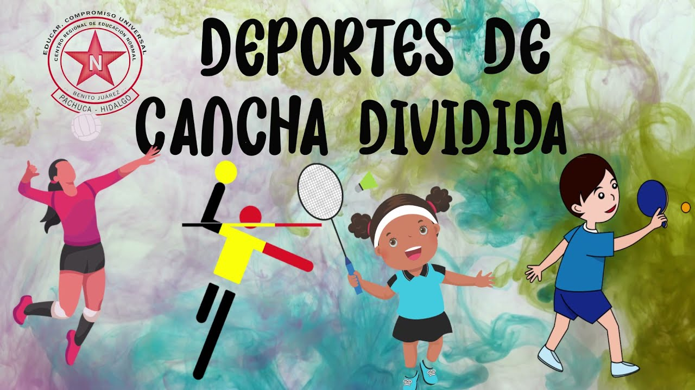

- Deportes de cancha.
Una pista de juego, también conocida como campo o cancha de juego, es un espacio acotado que se utiliza para ciertos tipos de carreras, juegos o competiciones, en hipódromos, velódromos, estadios, campos de tenis, etc.
